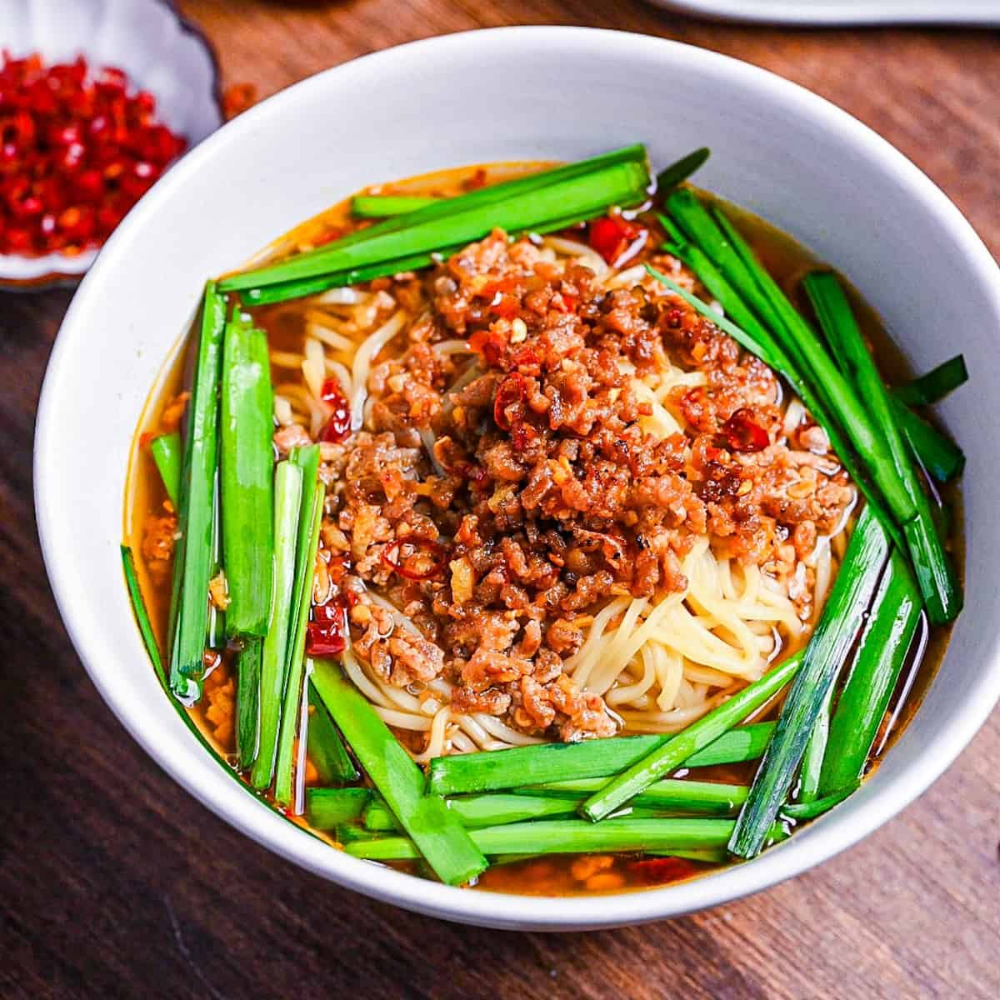

Taiwan Ramen
「台湾ラーメン — Energía, especias y tradición oriental en un solo tazón.」
El Taiwan Ramen es una creación japonesa inspirada en la cocina taiwanesa. De sabor picante y fuerte, este ramen combina carne molida, ajo y guindillas, dando como resultado un plato estimulante y lleno de energía.
Ingredientes
- Caldo con base de pollo o cerdo
- Carne molida salteada con ajo y chile
- Fideos medianos
- Cebolla verde y brotes de soya
Sabor
Picante, umami y levemente dulce.
Aroma
Intenso con notas de ajo y guindilla.
Textura
Ligera pero poderosa, con el picor justo.